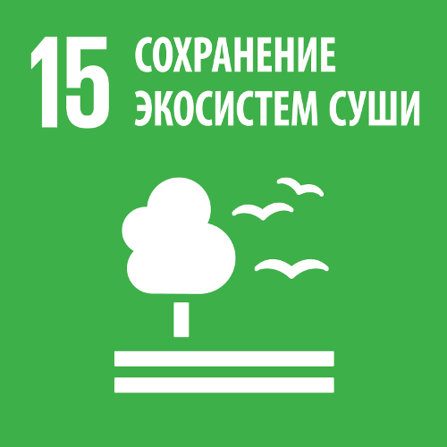

20 анимационных сериалов где обсуждают проблемы экологии
Толеубеков Жасулан
Аватар Легенда об Аанге (2005-2008) - 3 книга 3 серия (Цветная леди)
- Загрязнение водоема промышленными отходами завода
- Проявление cамостоятельных гражданских инициатив
Команда Аватара останавливается в речной деревушке Чан Хуэй, для
пополнения своих запасов. Однако воды реки сильно загрязнены илом с
промышленного завода народа Огня, и рыба которую они покупают совсем не
пригодна для пищи.
Загрязнение нарушает местную экосистему и убивает
рыб в водоеме, вызывая голод и болезни среди жителей деревни.
Желая помочь им, Катара притворяется Цветной Леди - речной дух,
исцеляющий больных и дающая им еду.
Аанг раскрывает тайную личность
Катары и они вместе разрушают фабрику, прекращая выброс загрязняющих
веществ. Впоследствии все жители деревни вместе с командой Аватара
отправились очищать реку.
Катара учит нас тому, что мы не должны ждать, пока кто-нибудь спасет нас
и решит наши проблемы, мы должны сделать это сами
Ben 10: Ultimate Alien (2010-2012) - 3 сезон 21 серия (The Widening Gyre)
- Загрязнение мирового океана
- Тихоокеанское мусорное пятно
- Бережное отношение к окружающей среде
Военные решают сбросить ракету с бактериями, питающимися пластиком на
Тихоокеанский мусорный остров, но бактерии мутируют, сливаясь с мусором в
ужасного монстра. После череды пропаж кораблей в районе Тихоокеанского
мусорного острова, полковник Розум обратился к Бен Тену за помощью
Придя на злополучный остров, команда наблюдает вокруг себя огромный
ландшафт, полностью состоящий из отходов жизнедеятельности людей. Гвен
объясняет, что все это происходит потому, что люди небрежно относятся к
тому, куда выбрасываютсвой мусор
Пластик — материал, пригодный для
вторичной переработки, который не разлагается очень длительное время.
Течения подхватывают его и уносят в одно место, пока все не соберется в
одну гигантскую массу
Затем Гвен внезапно замечает скелет гигантский мертвой птицы.
По иронии птица умерла от голода, хотя ее
желудок был наполнен пластиком …
Кевин вспоминает мультфильм Captain Planet and the Planeteers , о
5
героях, способных перерабатывать мусор и бороться с загрязнителями ,
который он смотрел в детстве
Мой шумный дом (2016-…) - 1 сезон 22 серия (Green House)
- Глобальное потепление
- Углеродного следа
- Энергосбережение
Класс Линкольна участует в экологическом конкурсе Спасти белого медвежонка,
в котором они должны уменьшить выбросы углерода. Но семья Линкольна использует
невероятно большое количество энергии для своих повседневных нужд, и
Линкольн рискует стать изгоем для своих одноклассников из-за того, что он не достиг зеленой отметки
У Линкольна на пути стоит огромная задача - сэкономить как
можно больше электричества, чтобы его класс смог победить в конкурсе и
спасти белого медвежонка. Но с десятью сёстрами у Линкольна почти что
нет ни единого шанса
Линкольн убеждает своих сестер снизить потребление энергии в
доме,показывая им фотографию медвежонка. Линкольн отключает все больше и
больше электроприборов в доме, а затем и вовсе приводит в дом
электричество вручную с крутя педали велосипеда
В конце недели миссис
Джонсон объявляет, что благодаря Линкольну класс выиграл конкурс «Белый
медведь» и Линкольн избегает участи изгоя
Удивительный мир Гамбола (2011 – 2019) — 6 сезон 26 серия (The Stink)
- Сортировка отходов
- Гринвошинг
- Потеря мест обитания
Гамбол затрудняется с выбором правильного бокса, в который нужно положить
пластиковую тару и решает выбросить ее в обычную урну. Но когда он бросает
бутылку, мистер Смолл резко выпрыгивает перед ним и говорит Гамболу, что ему
следует сдать ее на переработку
Гамбол критикует эту концепцию, утверждая, что: как только
ресурсы Земли истощатся они смогут просто перебраться на другую
экзопланету
Чтобы убедить детей бережно относится к ресурсам планеты,
Мистер Смолл показывает мальчикам, как он старается жить с минимальным
экологическим следом: он делает покупки только в экологичных и небольших
магазинах,не принадлежащих корпорациям и монополиям, покупая только
локальную и натуральную продукцию
Гамбол отмечает,
что так называемый малый бизнес принадлежит корпорации Chanax Inc,и
продукты которые стоят на полках далеко не местные, что наталкивает нас
на мысль о том что мистер Смолл стал жертвой гринвошинга
Время приключений (2010-2018) - 8 сезон 11 серия (Прятки)


До войны люди населяли большую часть Земли. Неизвестно, из-за чего началась война.
Название "грибная" можно посчитать отсылкой к грибообразным облакам, порождаемым
взрывами ядерного оружия, которое использовали во время конфликта
Война скорее всего, стала последствием разногласий человечества в ядерном
масштабе (как во времена Холодной войны или Второй мировой войны). Предположительно,
война закончилась, когда мощная грибная бомба была детонирована другим ядерным оружием
Окончание войны оставило подавляющую часть планеты разрушенной и почти уничтожило
всё живое. Инфраструктура, технологии и постройки людей — за редким исключением
— остались лежать в руинах, разбросанных по всей Земле. Этот постапокалиптический
пейзаж можно часто увидеть в разных сериях
После того, как мир был разрушен, Основатели создали безопасный остров, на
котором жили и учили детей, как выживать и искать людей, нежелающих присоединится
к ним - "пряточников", чтобы предложить им более безопасную жизнь
Леди Баг и Супер-кот (2015-…) - 5 сезон 27 серия (Action)
- Одноразовый пластик
- Монополии
- Загрязнение рек и морей
Команда подростков обьединяет усилия для очистки реки и сокращения производства
одноразового пластика. Выясняется, что источником их проблемы является Бертран
Кинг - крупнейший производитель пластика. Это наталкивает Маринетт на мысль о
том, что они должны попытаться решить проблему с корня, лично встретиться с ним
и убедить его изменить свою политику
В офисе Бертрана Кинга подростки проводят презентацию, где рассказывают о
полезных качествах пластика: его дешево производить, он прочный, легкий.
Затем Милен переходит к негативным моментам: создается слишком много пластика и
что большинство предметов используются всего один раз, прежде чем их выбрасывают
Но Бертран говорит, что в этом и есть вся
суть, его компания зарабатывает деньги на том что люди продолжают
покупать его одноразовую продукцию снова и снова…
Специальный эпизод для повышения осведомленности молодой аудитории о
загрязнении пластиком был выпущен Breteau Foundation вместе с
бесплатными
образовательными ресурсами для учителей
начальных классов
Фиксики (2010-…) - Cборник серий (Фиксики за экологию)
- Энергосбережение
- Бережное отношение к природе
В этих сериях посвященных экологии, фиксики обьяснят детям
Как людям нужно поступать, чтобы не наносить вреда нашей планете
Смешарики Пинкод (2012-2019) - Сборник cерий про экологию
- Энергосбережение
- Альтернативные источники энергии
Любознательным Смешарикам хочется узнать новое, они стремятся
исследовать все вокруг. Пин изобретает такую машину, чтобы вся компания
могла совершить научную экспедицию
Смешарики решают отправиться в
совместное путешествие, не подозревая, что им предстоит пережить самое
захватывающее приключение, которое изменит их взгляд на мир
Легенда о Тарзане (2001-2003) - 1 сезон 8 серия (Отравленная река)
- Отравление экосистемы
- Загрязнение рек
- Добыча полезных ископаемых
В этом эпизоде слон Тантор заболевает после того, как напивается водой
из реки. Профессор приходит к выводу, что вода, должно быть, загрязнена.
Тарзан, Джейн и профессор отправляются в опасное путешествие вверх по
реке, чтобы найти источник загрязнения
Их захватывает туземное племя, которое подозревает, что это они отравили
реку. Но Тарзан обнаруживает источник загрязнения реки - горнодобывающая
деятельность. Тарзан и его друзья объединяются с жителями деревни и
разрабатывают план борьбы с шахтерами
Жизнь и приключения робота-подростка (2002 – 2006) - 2 сезон 4 cерия
(Mind Over Matter)
- Запланированное устаревание
- Потребительское отношение
Мультсериал повествует о приключениях робота-подростка Дженни, чья основная
задача - охранять планету от всевозможных бедствий и суперзлодеев. Но, как и
любой тинейджер, Дженни по натуре не прочь иногда развлечься и на время забыть
о том, что она работает спасительницей человечества
В этой серии Брэд покупает себе новый калькулятор и просто напросто
выбрасывает старый в мусорное ведро, тогда то Дженни узнает о
запланированном устаревании вещей
Позже Дженни терпит поражение от Гигаватта (злодея из космоса питающегося
электричеством). Она пытается использовать новые способы борьбы с враждебной
инопланетной формой жизни, однако они не срабатывают. Дженни начинает задаваться
вопросом, не пора ли ей списать себя в утиль,как тот старый калькулятор?
Дженни учит нас беречь наши вещи,стараясь продлить их срок жизни и
не совершать импульсивных покупок, навязанных нам обществом
Запланированное устаревание — это когда компании намеренно
разрабатывают продукты, которые выходят из строя преждевременно или по истечении
определенного периода времени, что приводит к повышению спроса на новые продукты
Альберт говорит Природа знает лучше! (1995-1997) - 1 сезон 12 серия
(Мусор и отходы: бумеранг)
- Мусорный полигон
- Сортировка отходов
- Жизненный цикл вещей
Как окружающая среда перерабатывает то, что ей больше не нужно? Чем
важны птицы и растения? Какие существуют источники энергии? Почему важно
перерабатывать мусор? Как выглядят свалки изнутри и какие ещё способы
обращения с отходами выдумало человечество — все это и многое-многое
другое ребята узнают в увлекательном путешествии вместе с Альбертом
Герои мультфильма будут учиться сортировать отходы, показывая пример
своим зрителям, а также воспитывая у детей экологическое сознание, бережное
отношение к природе и сознательное использование ее ресурсов
Братья Кратт:Зов природы(2010) - 2 сезон 13 серия (Аквалягушка)
- Загрязнение водных экосистем
- Токсичные отходы
- Экосистемы водоемов
Крис и Мартин исследуют дикую природу всего мира, чтобы побольше узнать о жизни
животных. С помощью специальных супер-костюмов братья Кратт приобретают умения и
способности этих животных. Эта сверхспособность позволяет ребятам не только
наблюдать за дикими зверями, но и выручать их в чрезвычайных ситуациях
В этом эпизоде Зак Вармитеч, сбрасывает токсичные отходы в ручей, ведущий к пруду,
что может нанести вред молодым лягушками-быкам, развивающимся головастикам и другим
животным, обитающим в пруду
The Deep (2015 - 2022) - 4 сезон 9 эпизод (Garbage Monster)
Семья Нектонов — это отважные подводные исследователи: Антея и Фонтейна, а
также их родителей Уилла и Кайко, и они стремятся разгадать тайну океанских
глубин. Умная машина, которую создал Антей для очистки огромной океанической
свалки мусора, съедена огромным существом
Герои-спасатели (2019) - 1 сезон 14 серия (Recycling Matters!)
- Переработка
- Загрязнение водных ресурсов
Герои-спасатели, Эл Валанш и Клоуз,отправляются в Северное море, где остров мусора
угрожает морским животным. Сэнди берет на себя руководство и помогает команде
узнать об опасностях одноразового пластика и важности переработки
Это ремейк оригинального канадского анимационного телесериала Rescue Heroes.
Сериал рассказывает о приключениях команды спасателей, которые спасают людей из различных
катастроф и учат детей, как оставаться в безопасности во время катастроф и несчастных случаев
Юные титаны вперед! (2013 - …) - 7 сезон 17 серия (Polly Ethylene and Tara Phthalate)
- Загрязнение водных экосистем
- Переработка пластика
Титаны наслаждаются прекрасным пляжным днем на берегу острова Башни
Титанов, но их отдых расстраивает мусор,которым наполнен океан. Робин
приказывает команде очистить воду от мусора
В конце концов они
натыкаются на говорящие бутылки по имени Полли Этилен и Тара
Фталат. На самом деле это волшебные пластиковые молекулы объединяющиеся
в «ПЭТ», которые можно переработать практически во что угодно
Полли и Тара отвозят Титанов на завод по переработке отходов Джамп-Сити,
где происходит большая переработка. Команда наблюдает, как конвейер
превращает загрязненные пластиковые бутылки во всевозможные новые вещи,
такие как ковры, стулья и сумки
Полли и Тара заявляют, что люди могут повторно использовать пластик для своих
собственных проектов. Кажется, что мир спасён от мусора, но проблемы
окружающей среды и приближающиеся метеоры говорят об обратном…
Помощники Земли (2024)
- Защита китов
- Загрязнение океана
- Тихоокеанское мусорное пятно
Люди годами сбрасывали в океан отходы, которые накопились и соединились в
большой остров. Такой остров и называется мусорным пятном. В мире их несколько,
но самый большой плавает в Тихом океане. Волны образовывают воронки,
притягивающие новые выброшенные отходы.
Учёные подсчитали, что сейчас тихоокеанское мусорное пятно состоит примерно из
350 миллионов тонн мусора. То есть его площадь равна размеру трёх Испаний.
С воздуха можно увидеть лишь часть острова, так как основная куча отходов находится под водой
Рина запускала игрушечные кораблики. Вдруг на чердаке у Дима
раздался сигнал бедствия — в океане маленький китёнок заблудился в плавающем мусоре и застрял там. Дружная
команда Помощников Земли вызволяют китёнка
Позже они разбираются, откуда в океане появляются
мусорные острова и как от них избавиться. Во время очистки океанских вод Рина находит среди отходов свой
кораблик
— он был частью мусора, который пленил китёнка
Captain Planet and the Planeteers (1990-1996) - 3 сезон 11 серия (Earth Day Crisis)
- Глобальное потепление
- Изменение климата
Человечество настолько загубило Землю ради собственного величия,
то и дело в мире возникают различные техногенные катастрофы,
способные уничтожить мир
В центре сюжета анимационного сериала «Команда спасателей Капитана Планеты» 5 героев, которым богиня Гейя
поручает важную миссию по спасению родного мира. С помощью специальных колец
силы Земли, Огня, Воды, Ветра и Сердца объединяются, чтобы защитить мир от зла
Глубоко внутри S.S. Plunder экозлодеи Лутен Планд, Верминос Скумм, Доктор Блайт, Дюк Нюкем и Слай Сладж
поклялись испортить День Земли, объединив свои силы, чтобы
сформировать Капитана Загрязнения
Cлучается так, что даже
сверхспособностей героев оказывается недостаточно, и тогда силы пятерки складывается в общий поток
энергии, призывающий супергероя – Капитана Планету, способного справиться с любой опасностью
Семейка Тофу (2004-2005)- 2 cезон 9 Серия (Большой побег)
- Контрабанда животных
- Цирк
- Эксплуатация животных
Когда Мама и Папа Тофу понимают, что их семья задыхается от городской жизни, они поселяются в домике на
ферме и начинают вести экологически чистый образ жизни. Защита окружающей среды становится для Мамы и Папы
смыслом жизни. Вся семья питается исключительно «дарами природы»- овощами и фруктами, и никаких химикатов и
консервантов
Вскоре Чичи и Лола начинают скучать по нормальной жизни. Посмотреть телевизор? Ветряная мельница не
вырабатывает достаточно электричества! Пройтись по магазинам? Мама просто пострижет овечку и сошьет новое
платье. Дети любят своих родителей, но расти им так трудно. Как быть подросткам без телефона и компьютера?
Губка Боб Квадратные Штаны (1999-…) – 7 сезон 15 серия (Последняя линия обороны Губки Боба)
Спанч Боб и Патрик узнают, что на их любимых Медузных полях собираются построить скоростное шоссе, и это
приведет
к гибели всех медуз. Друзья решают протестовать против постройки, но это будет не так-то просто…
Новая школа императора (2006-2008) - Сезон 2, Серия 28 (Эко Кузко)
- Загрязнение водных экосистем
- Токсичные отходы
- Экология
Изма решает выбросить старые флаконы с зельями, но Кронк останавливает ее. Он
убеждает ее выбросить их в специальную урну, на что Изма охотно
соглашается.
Позже выясняется что Изма обманула Кронка и эта урна ведет
прямиком в речку, тем самым загрязняя общественный источник питьевой воды.
Почти все люди превращаются в животных, кроме Кузко и Мэлина, потому что
они пили только воду «Эйч Кузко»…
Лило и Стич (2004-2006) - 2 сезон 16 эпизод (Плут)
- Загрязнение водных экосистем
- Переработка мусора
Лило и Стич отправляются убирать от мусора грот Паджа. Убирая дно грота, Лило заметила генетический
экспериментальный образец. Он убирает мусор, грязь, выхлопы. Лило и Стич, решив, что это его призвание,
отпускают его чистить город. Но они ошиблись …
Agent Ani (2007) - 1 сезон 4 серия (Whale Tale)
- Защита китов
- Браконьерство
Китобойные судна отправляются на охоту у берегов Новой Зеландии. Но их планы расстраивает агент Ани!
Симпсоны (1989-…) - 8 сезон 21 серия (Лиза и Старик)
Лиза заинтересована акцией по переработке вторсырья. Мистер Бёрнс, как самый богатый житель Спрингфилда,
специально приглашенный Директором Скиннером в школу, отрицает факт пользы переработки вторсырья
Дикие Торнберри (1998 — 2004) - 2 сезон 20 серия (Что знают выдры)
- Разлив нефти
- Загрязнение морей
Семья Торнберри находится на Камчатке, чтобы снять фильм «Звездный морской орлан». Найджел и Марианна
отправляются на съемки на вертолете, пока Элайза и Дарвин исследуют окрестности. Они встречаются с
дружелюбной группой морских выдр и начинают играть вместе
Но в этот район заходит нефтяной танкер, который Кип и
Бидерманн взрывают и нефть начинает разливаться по морской длани. Элайза берет на себя задачу спасти выдр. Но
когда нефть загорится, кто же спасет ее?